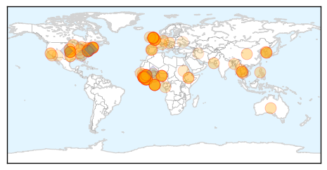
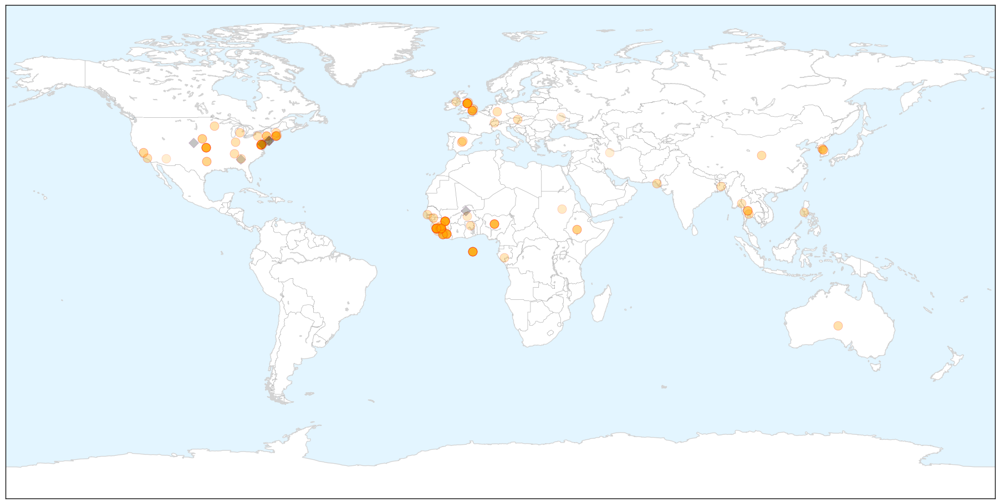
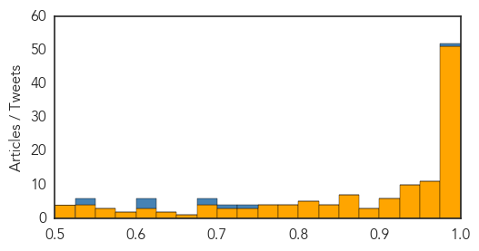

Ebola
30-Day Web Trend
0 alerts, 0 warnings

30-Day Twitter Trend
0 alerts, 0 warnings

Article Locations

X

Article Confidences
Top Articles:
- 1.000
- American doctor cured of Ebola returning to Liberia
- 1.000
- Liberia Starts Serum Treatment to Fight Ebola
- 1.000
- Massachusetts doctor cured of Ebola returning to Liberia
- 1.000
- Morbidity and Mortality Weekly Report (MMWR): Update: Ebola Virus Disease Epidemic - West Africa, December 2014 - Sierra Leone
- 0.999
- Mali ends last quarantines, could be Ebola-free next month
- 0.999
- Ebola spreads via social clusters, not randomly, Yale report says
- 0.999
- Endless Ebola Epidemic? That's The 'Risk We Face Now,' CDC Says
- 0.999
- UIHC becomes Iowa’s Ebola treatment center
- 0.998
- WHO: True Ebola Toll Hidden
- 0.998
- Endless Ebola Endemic? That's The 'Risk We Face Now,' CDC Says
- 0.998
- Ethiopians arrive in W Africa to fight Ebola
- 0.998
- Ebola lasts for a long time in semen even after recovery: Scientists
- 0.998
- Sierra Leone: Sierra Leone to Search Freetown Houses for Ebola Patients
- 0.998
- Mali ends last quarantines, could be Ebola-free next month
- 0.998
- RPT-Mali ends last quarantines, could be Ebola-free next month
- 0.997
- Suspected Ebola patient tests negative for virus
- 0.997
- Ebola: UN forum urges debt relief for hard-hit countries
- 0.997
- Ebola – 'terrible learning curve' that could stop virus in Sierra Leone
- 0.997
- Sierra Leone to search for Ebola cases in capital
- 0.996
- PolitiFact's liars of the year: The politicians who played the Ebola fear card
- 0.996
- 'With The Money From Corruption, We Could End Ebola'
- 0.994
- Why Sierra Leone Literally Had to Cancel Christmas
- 0.994
- The CDC's Ebola Predictions in September Were Reasonable
- 0.994
- Palo Conteh “blow mind” « Awoko Newspaper
- 0.993
- Men in Recovery Should Wear Condoms for at Least 3 Months
- 0.993
- Christmas banned in Sierra Leone to stop Ebola spread
- 0.993
- Ebola Outbreak Causes Christmas Celebrations to be Banned in Sierra Leone
- 0.992
- Sierra Leone’s crisis deepens as doctors die of Ebola
- 0.991
- Ebola survivors face critical problems
- 0.991
- ASEAN Plus Three to Heighten the Ebola Preparedness and Response
- 0.991
- NERC launches Operation WAS « Awoko Newspaper
- 0.990
- World Bank Group Ebola Response Fact Sheet (15 Dec 2014) - Liberia
- 0.986
- Battle against Ebola to go 'mini, local' — experts
- 0.985
- Consortium led by Cambridge firm Kymab to develop ebola treatments
- 0.982
- $1 million state grant will help develop rapid Ebola test
- 0.980
- India’s ban on Islamic State
- 0.980
- Debating the ‘right to die’
- 0.980
- WEATHER BLOG: Dry Out
- 0.980
- Experts: Lone-wolf attacks could happen in U.S.
- 0.980
- Police: Baltimore man attacks family with sword
- 0.980
- 1 Dead After Accident Involving Stolen Ambulance
- 0.980
- Police: Robbers steal money, drug from pharmacy
- 0.980
- Tavon White Back On Stand In BGF Trial
- 0.980
- American in North Korea denounces U.S. policy
- 0.980
- Kailahun Authorities Demand Ban on Travelling
- 0.979
- No need for U.S. army help in Sierra Leone Ebola fight
- 0.979
- Archives > News > Sacramento hospitals named Ebola treatment centers
- 0.978
- No need for U.S. army help in Sierra Leone Ebola fight - Britain
- 0.977
- Korea sends backup staff to fight Ebola in Sierra Leone
- 0.977
- Greening: New UK support for child victims of Ebola - Sierra Leone
Showing top 50 articles...
Top Tweets:
- 0.977
- Merci aux courageux combattants d’Ebola de la Guinée!
- 0.728
- Sierra Leone: 40 new cases confirmed on 13 December | EbolaOutbreak ElbowOutEbola
- 0.718
- In Guinea: Partners running treatment centers well. Wonderful to speak w. health workers from around the world who are fighting Ebola
- 0.693
- RT: Kymab and the Wellcome Trust initiate Ebola project to produce an antibody-based medicine to fight Ebola infection http…
- 0.692
- RT: Studies predicted that the Ebola epidemic would result in hundreds of thousands of cases. That won't likely happen. http://t.c…
- 0.623
- Except flu and Ebola both have climate drivers too Most Americans are clueless about how climate change will affect their health
- 0.617
- CDC Foundation support to Ebola response helps advance & accelerate progress in so many critical ways in affected countries. Saves lives.
- 0.601
- For Ebola Patients in Sierra Leone Survival Takes More Than Medicine | WIRED http://t.co/yrcumxRb9l
- 0.547
- RT: Read the latest update on the Ebola virus disease epidemic in West Africa. http://t.co/SLGzyz2HMC http://t.co/jmFR7nrmjD
- 0.536
- Little Darius Bondo who is four years old and infected with Ebola almost died walking to the main road Ebola http://t.co/pa8v0fmtLW